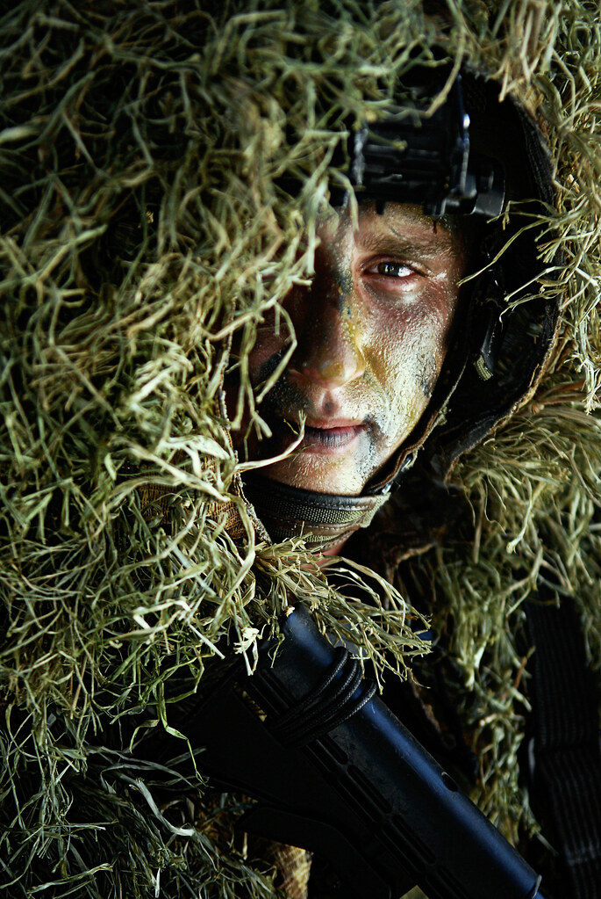

Darius has a special power of camouflage and super strenght. He uses this ability to hunt for food,help others and protect his village from unwanted visitors. Darius and a small group hunt for the entire village. Darius always leads the charge because he is very strong. He uses the camouflage to sneak up on the prey and his strength to take down the animal. Once a while there will be a wild animal that will roam the village and Darius takes care of it, so no one gets hurt.
 "Israel's Special Forces in Camouflage" by Israel Defense Forces is licensed under CC BY-NC 2.0Click the links below to find out more about Darius